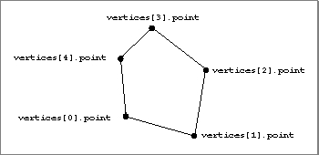

Simple Polygons
A simple polygon is a closed plane figure defined by a list of vertices. (In other words, a simple polygon is a polygon defined by a single contour.) The edges of a simple polygon should not intersect themselves or you will get unpredictable results when operating on the polygon. In addition, a simple polygon must be convex.The entire simple polygon can have a set of attributes, and any or all of the vertices defining the polygon can have a set of attributes.
A simple polygon is defined by the
TQ3PolygonDatadata type. See "Creating and Editing Simple Polygons," beginning on page 4-81 for a description of the routines you can use to create and edit simple polygons. Figure 4-13 shows a simple polygon.
typedef struct TQ3PolygonData { unsigned long numVertices; TQ3Vertex3D *vertices; TQ3AttributeSet polygonAttributeSet; } TQ3PolygonData;
Field Description
numVertices- The number of vertices in the simple polygon. The value of this field must be at least 3.
vertices- A pointer to an array of vertices that define the simple polygon.
polygonAttributeSet- A set of attributes for the simple polygon. The value in this field is
NULLif no polygon attributes are defined.